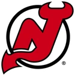

Торонто — Нью-Джерси: прогноз на матч 9 ноября 2026
НХЛ · понедельник, 9 ноября · 03:00 МСК
Торонто
—
Нью-ДжерсиПрогноз зашёлСчёт 0:4
Итоговая победа Нью-Джерси
1,68
Линия на основное время
П13,09
Х4,21
П22,02
Форма команд
Торонто
- П04.11дома — Юта2:3
- В01.11в гостях — Ванкувер4:2
- П29.10в гостях — Сиэтл4:5
Нью-Джерси
- В06.11дома — Сент-Луис5:4 ОТ
- В04.11дома — Эдмонтон4:3 Б
- В31.10в гостях — Вегас5:2